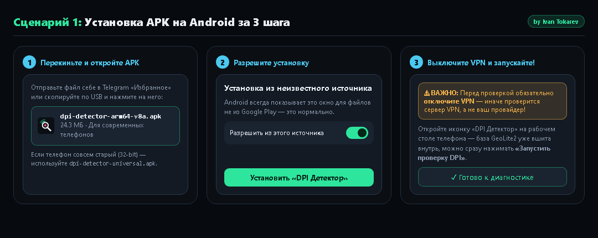
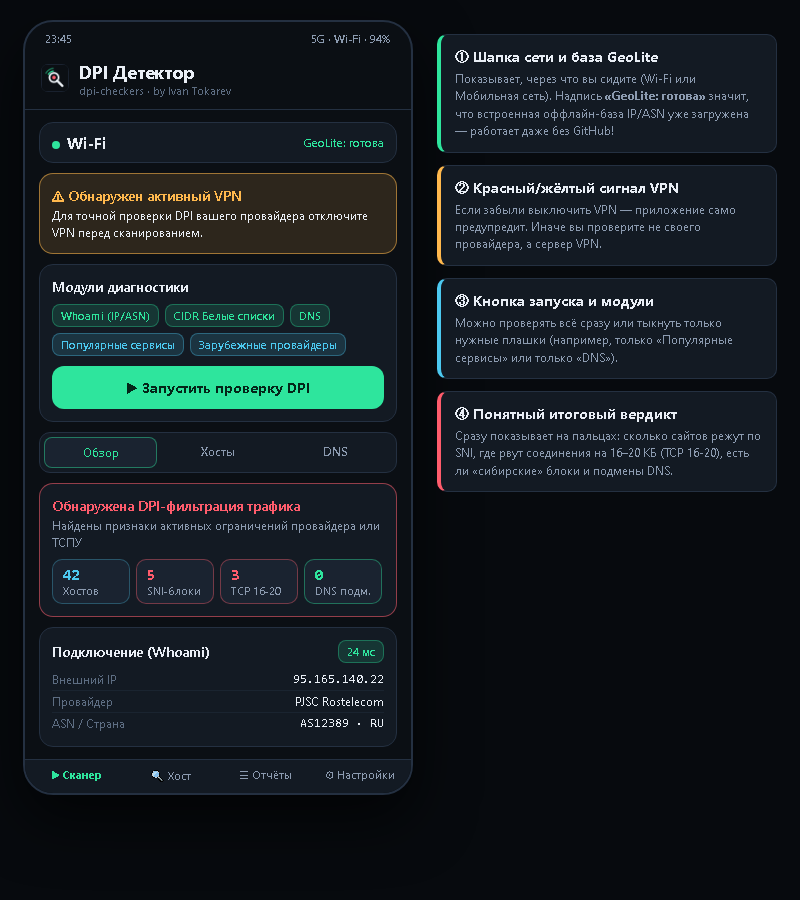
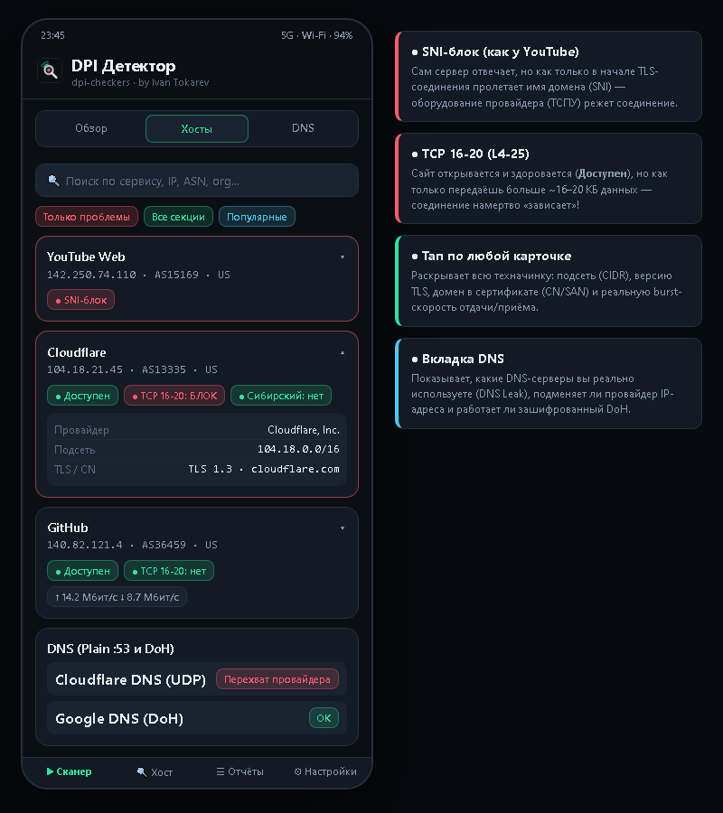
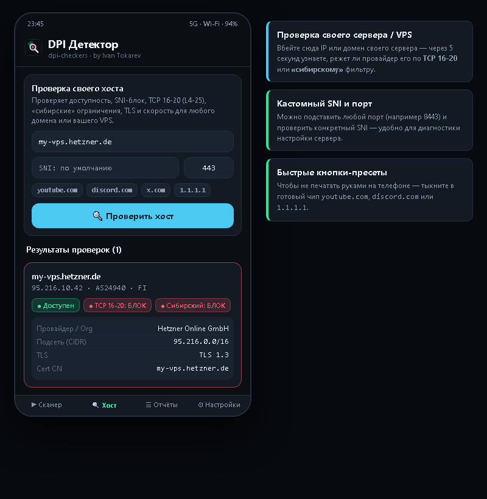
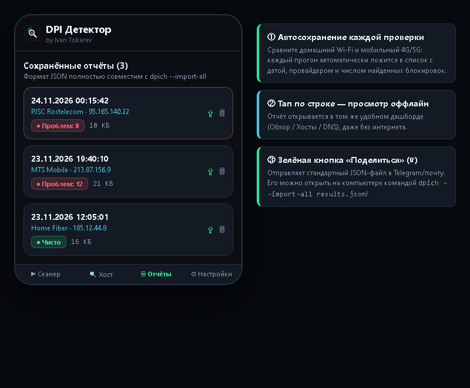
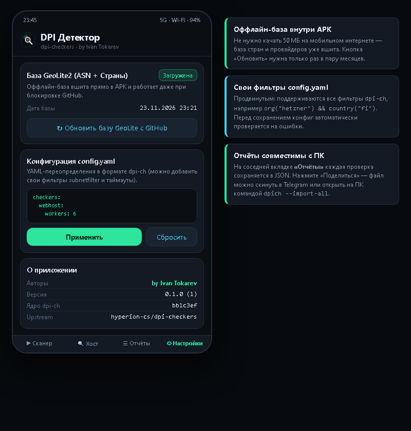
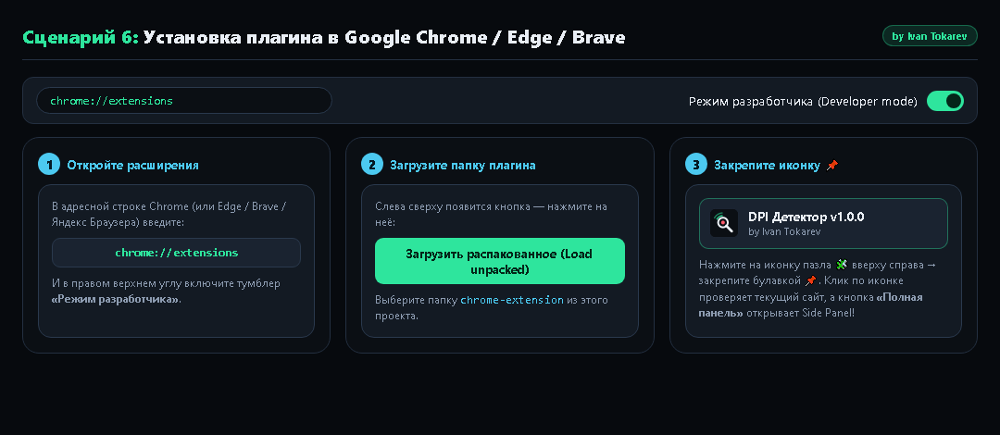
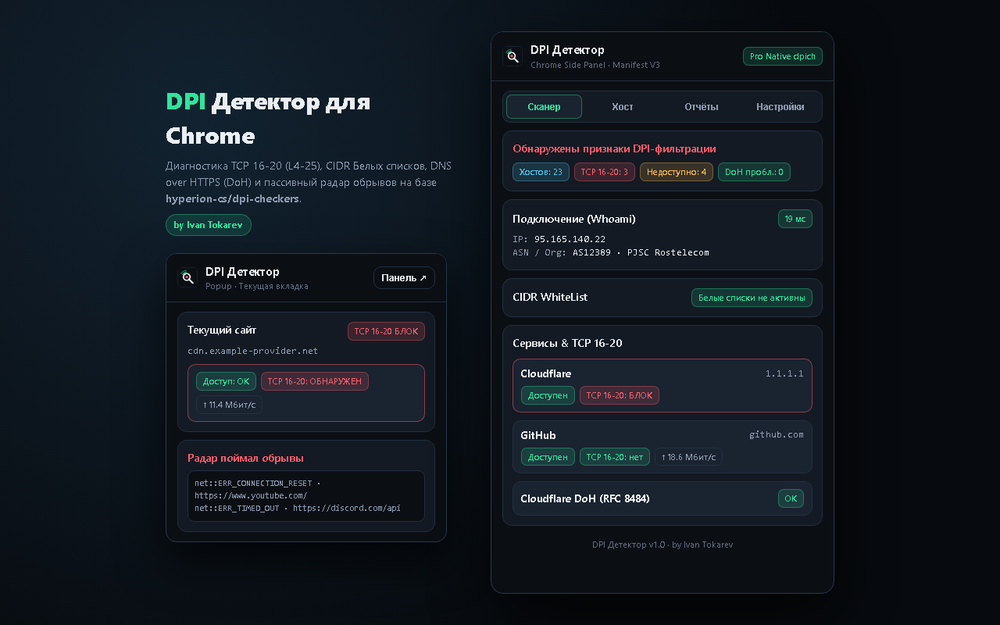

Все 7 сценариев использования на Android и в Google Chrome простыми словами и со скриншотами. Ядро: hyperion-cs/dpi-checkers.

dist/dpi-detector-arm64-v8a.apk (для старых телефонов — dpi-detector-universal.apk).
Дождитесь надписи GeoLite: готова (база вшита внутрь APK, ничего качать не надо) и нажмите зелёную кнопку «Запустить проверку DPI». Через 20–60 секунд появится итоговый вердикт и карточка Whoami.

Нажмите «Только проблемы», чтобы сразу увидеть, какие сервисы режет провайдер. Тап по карточке раскрывает подсеть, TLS, сертификат и скорость. На вкладке «DNS» видны утечки, перехват UDP DNS и статус DoH.

Впишите любой домен или IPv4 вашего сервера (либо кликните готовый пресет) и нажмите «Проверить хост» — через 5 секунд будет диагноз по SNI, TCP 16-20 и «сибирским» фильтрам.

Каждая проверка сохраняется автоматически. Можно сравнить Wi-Fi и 4G/5G и отправить JSON-файл через «Поделиться» (совместим с десктопным dpich --import-all).

Здесь можно при желании обновить встроенную базу GeoLite2 с GitHub и прописать свои фильтры subnetfilter в config.yaml.


Откройте chrome://extensions → включите «Режим разработчика» → «Загрузить распакованное» → выберите папку chrome-extension. Клик по иконке проверяет текущий сайт; кнопка «Полная панель» открывает Side Panel со всеми чекерами.
| Статус | Что происходит простыми словами |
|---|---|
| SNI-блок | Провайдер видит имя домена при старте HTTPS и сразу рвёт связь (сам сервер живой). |
| TCP 16-20 (L4-25) | Первые ~16–20 КБ проходят, а потом соединение намертво зависает после ~25-го пакета. |
| Сибирский: БЛОК | Одиночный запрос проходит, но серия параллельных соединений Chrome режется. |
| CIDR WhiteList | Работают только «белые» сайты (ya.ru, vk.ru, max.ru), остальной интернет отрезан по подсетям. |
| DNS Подмена / Перехват | Провайдер перехватывает DNS-запрос и подсовывает фальшивый IP или ложный «сайт не найден». |